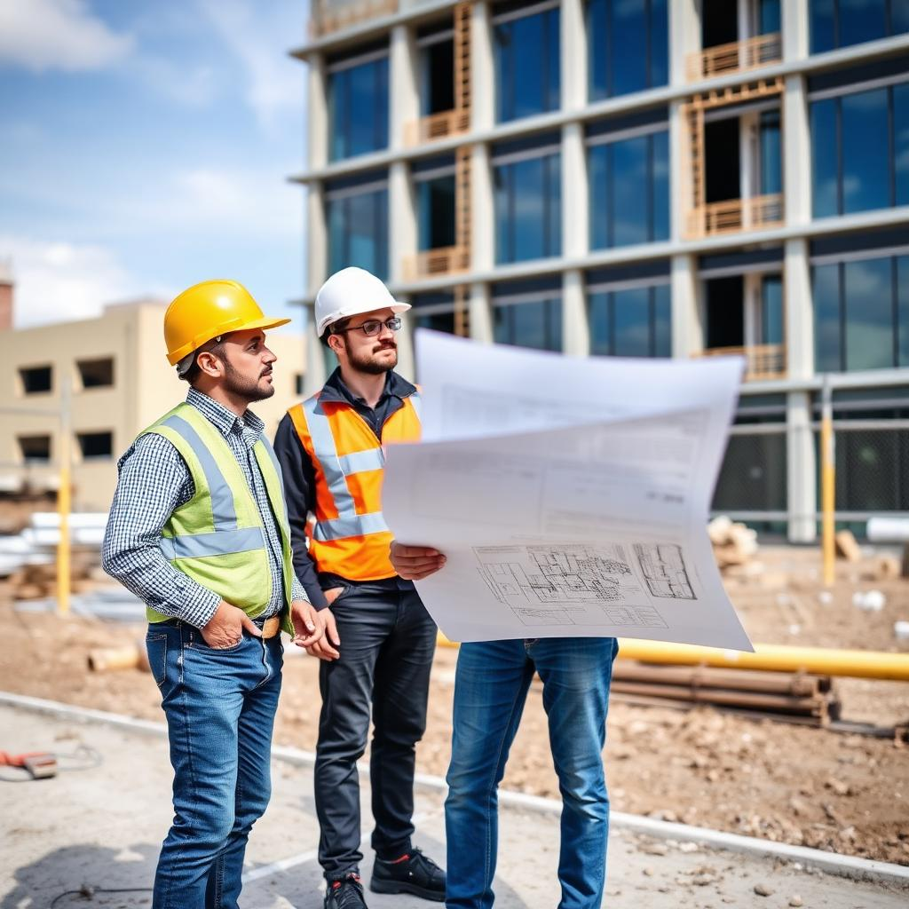

Vizyonumuz
Elektromekanik mühendislik alanında güvenilirliği, teknik yetkinliği ve çözüm kalitesiyle tercih edilen bir firma olmak.
Mühendislik, proje ve taahhüt alanında entegre elektromekanik çözümler.
AYDINHAN ELEKTROMEKANİK MÜHENDİSLİK PROJE TAAHHÜT SANAYİ VE TİCARET LİMİTED ŞİRKETİ; altyapı, endüstriyel tesis ve ticari bina projelerinde elektrik tesisatı, otomasyon sistemleri, yangın algılama ve ihbar çözümleri ile kamera ve görüntülü güvenlik sistemleri alanlarında hizmet veren bir mühendislik ve taahhüt firmasıdır.
Projelerimizi tasarım aşamasından anahtar teslim kuruluma kadar bütünsel şekilde yönetiyor; teknik doğruluk, iş güvenliği ve sürdürülebilirlik ilkelerini merkeze alıyoruz.
Merkezimiz Pendik / İstanbul olup İstanbul ve yakın çevresinde hizmet sunmaktayız.

Elektromekanik mühendislik alanında güvenilirliği, teknik yetkinliği ve çözüm kalitesiyle tercih edilen bir firma olmak.
Her projede ihtiyaca uygun, standartlara uyumlu ve uzun ömürlü sistemler kurmak; şeffaf iletişimle süreci yönetmek.
Deneyimli ve alanında uzman ekip ile profesyonel mühendislik çözümleri.
Elektrik, otomasyon, yangın ve güvenlik sistemlerini bütünsel şekilde ele alma.
Projelendirmeden uygulamaya kadar tüm süreçlerin yönetimi.
Uluslararası standartlara uygun çalışma anlayışı.
Müşteri ihtiyaçlarına hızlı ve çözüm odaklı yaklaşım.
Uzun vadeli, verimli ve güvenilir sistem çözümleri.
Projenin teknik ihtiyaçları değerlendirilir.
Proje için uygun mühendislik ve sistem çözümleri hazırlanır.
Uygulama süreci ve teknik gereksinimler planlanır.
Proje profesyonel ekip tarafından uygulanır.
Sistemler kontrol edilerek proje süreci tamamlanır.